Récapitulatif des matériels et logiciels
Logiciels

Matériels

Adressage IP

Schéma du déploiement
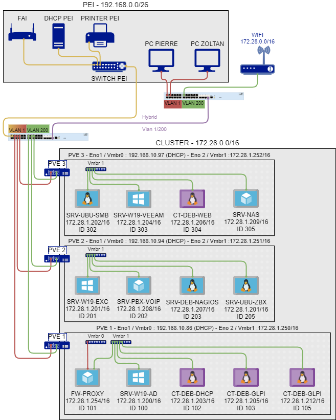
Création Cluster Proxmox
Objectif et environnement
Objectif
Installation et configuration d’un cluster en haute disponibilité sur serveurs Proxmox.
Environnement
Matériels :
3 x Dell PowerEdge r240 avec Proxmox 7.1-7
Adressage des VM’s :
Réseau interne : 172.16.0.0/16
Réseau externe : 192.168.10.xx/26 (en DHCP fournie par le PEI)
Documentation :
Configuration préalable
Nous allons utiliser des disques formatté Ceph pour la haute disponibilité. Ces disques doivent être non RAID ou RAID0 à 1 disque, sinon Ceph ne pourra pas s’installer.
Processus
Création d’un Cluster
Nous avons créé un cluster sur le 1er serveur (172.28.1.250/16) :
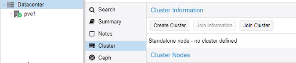Nommé le cluster puis create :
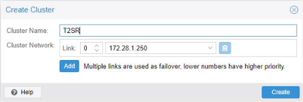
Le cluster a été correctement créé :
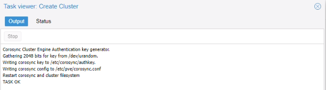
Une fois le cluster créé, nous avons copié join information (clé d’agrégation)
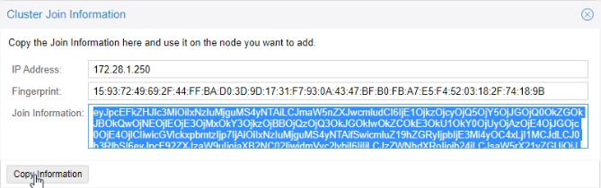
Sur le 2e serveur (pve2 : 172.28.1.251/16)
Menu Cluster > Joindre le cluster
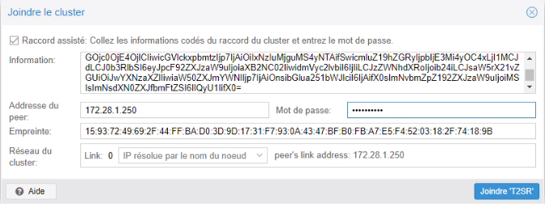
Le serveur est bien arrivé sur le cluster. Nous avons fait la même manipulation pour le 3e serveur (172.28.1.252/16).
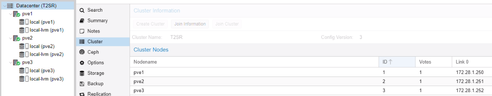
Installation Ceph
Installation Ceph sur les serveurs
Menu > Ceph
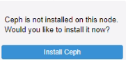
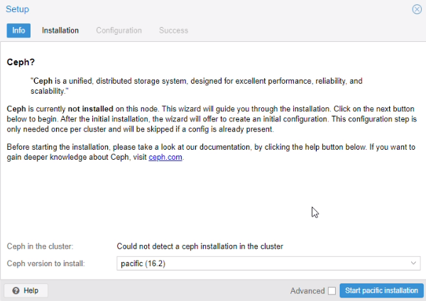
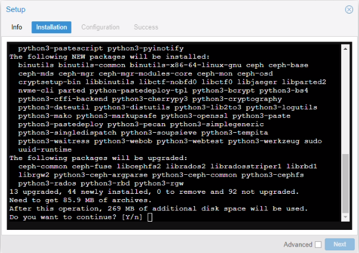
Nous avons installé Ceph sur les deux autres serveurs également.
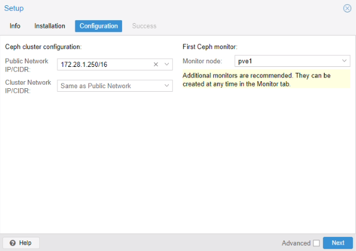
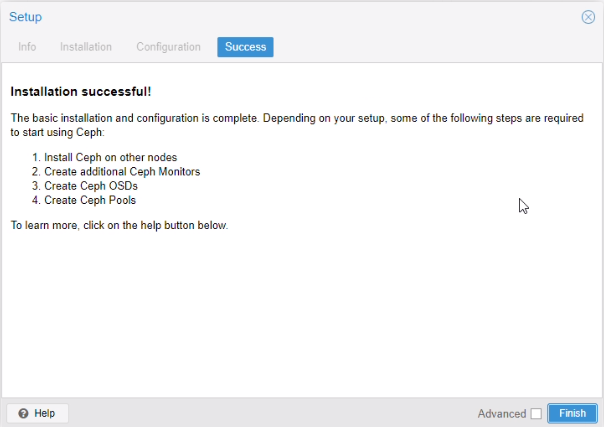
Ajout des Monitors et Managers
Cette fonctionnalité donne des droits pour afficher et manager les différents serveurs Proxmox.
Menu > Ceph > Monitor
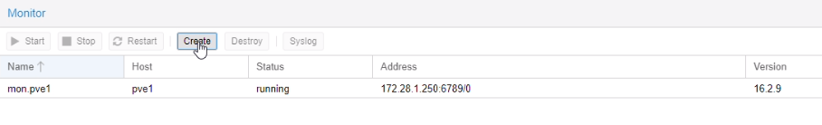
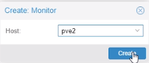
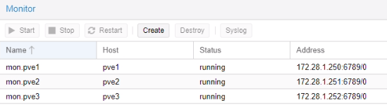
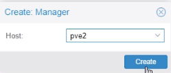
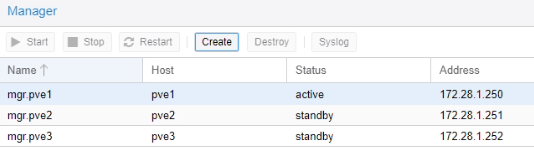
Création d’un pool de stockage
Menu Ceph > OSD > Create OSD
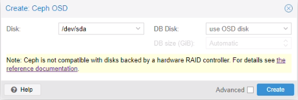
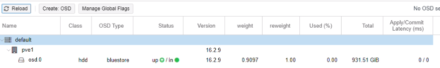
Nous avons effectué la même manipulation sur les deux autres serveurs.
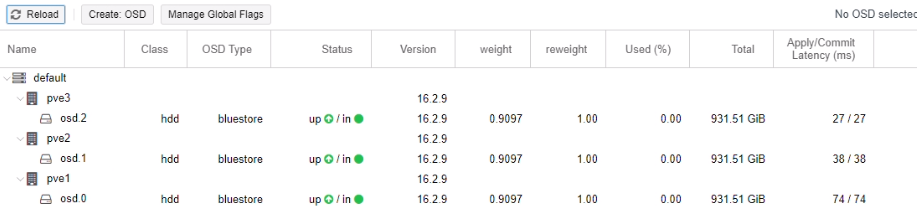
Création d’un pool
Menu > Ceph > Pools
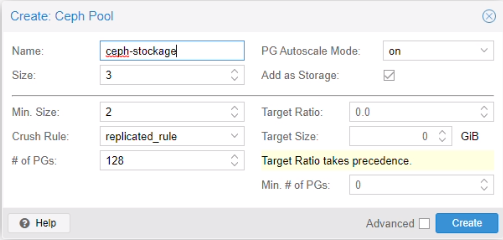
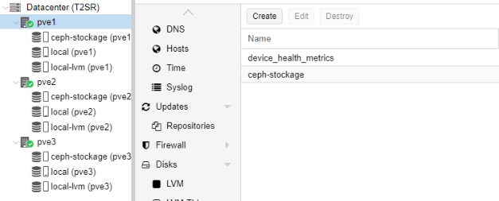
Ceph stockage a été créé.
Mise en place de la haute disponibilité (HA)
Menu > HA > Groups
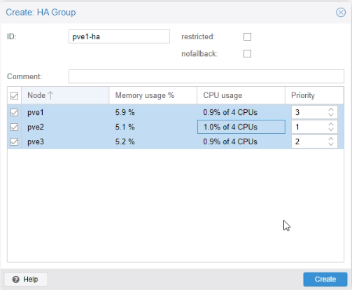
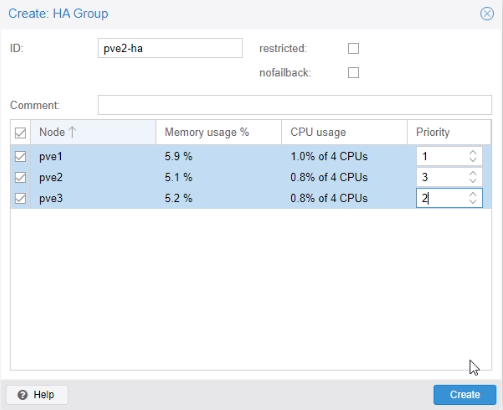
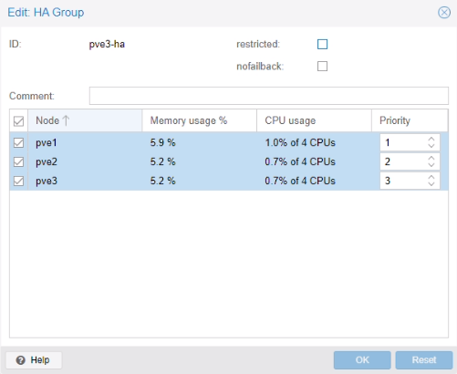
Test de la migration d’une VM
Nous avons créé un conteneur test sur le pve1
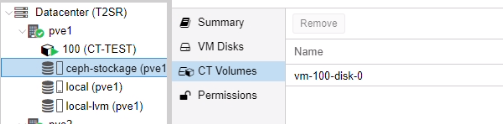
Nous avons ajouté le conteneur dans la haute disponibilité pve1-ha
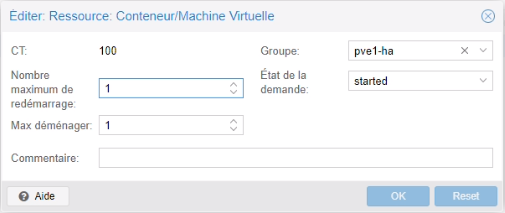
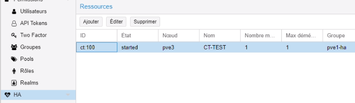
Puis nous avons arrêté le pve1.
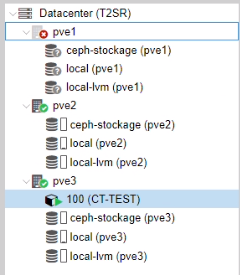
Le conteneur est bien arrivé sur le pv3. Par la suite nous avons rallumé pve1.
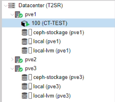
Le conteneur est retourné automatiquement sur pve1(3 min après avoir démarré pv1).
Test de la haute disponibilité lors d’une coupure d’un serveur
Nous avons lancé une copie d’un fichier volumineux à partir de la partition D:\ du l’AD sur le pve1 vers un dossier partage se trouvant sur le serveur SAMBA sur le pve3.
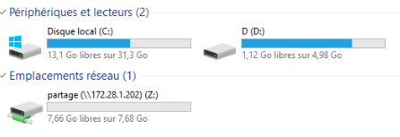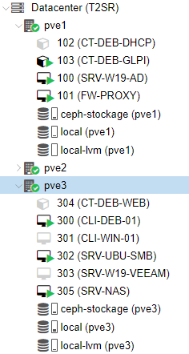
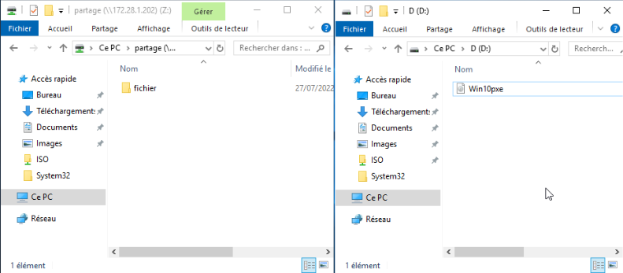
En paralelle, nous avons lancé un ping continue depuis CLI-DEB-01 sur pve3 vers www.google.com. Le client accède à l’internet via FW-PROXY se trouvant sur le pve1.
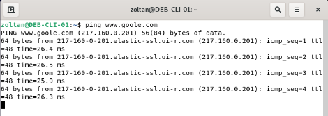
NB : chaque VM possède un snapshot avec sa dernière bonne configuration. Lors d’une migration, la VM bascule avec son snapshot !
Configuration des groupes HA
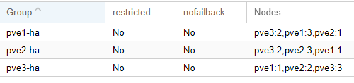
Ajout des ressources pour effectuer le test
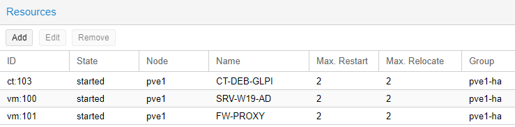
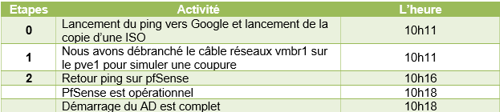
Etape1
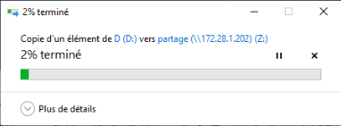
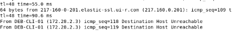
Les VM sont arrivées sur le pve3
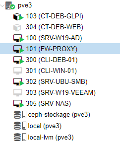
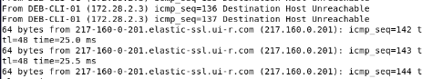
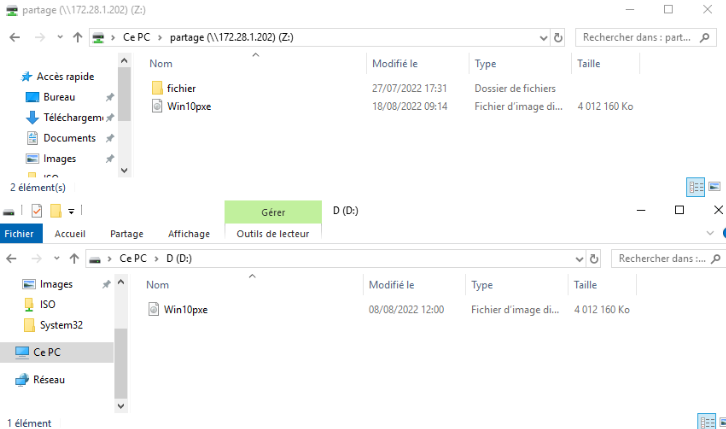
Nous avons rejoué la séquence en rebranchent le pve1
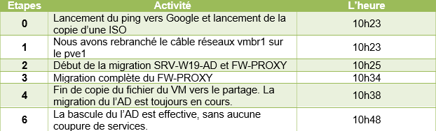
Etape2
Les VM AD et PROXY sont en état migrate
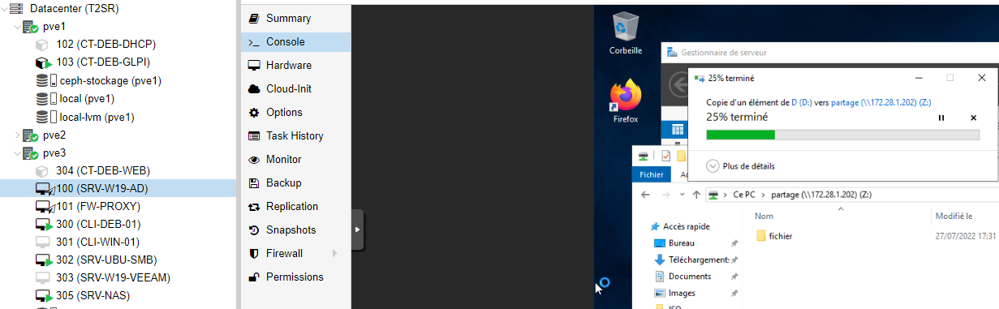
Pendant la copie la migration du l’AD n’a pas été effective.
Etape 3
Pf a basculé complètement sans aucune coupure
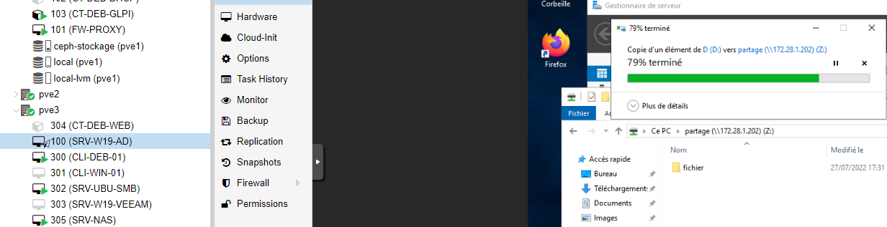
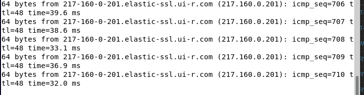
Etape 4
Fin de la copie du fichier depuis l’AD vers le partage SAMBA.
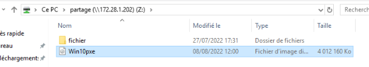
Pendant la migration l’AD continue fournir des services, notamment la résolution DNS. L’AD est toujours 100% fonctionnel.
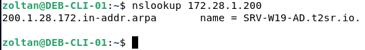
Etape 5
La migration du l’AD est effective
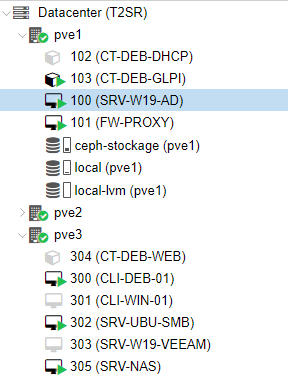
Suppression d’un cluster
systemclt stop corosync pve-cluster
pmxcfs -l
rm -rf /etc/corosync/\*
rm -rf /etc/pve/corosync.conf
killall pmxcfs
systemctl start pve-cluster
Conclusion
La mise en place d’un cluster est terminée. Les images concernées par la haute disponibilité doivent être crées sur la partition répliquée prévue à cette effet(ceph-stockage).
Sur Proxmox il y a une différence notable entre migration voulu ou depuis et vers un serveur actif et migration automatique suite d’une panne. Dans le premier cas (reprise d’activités), nous n’avons pas constaté de coupure de service. La migration est plus lente. Lors de la simulation d’une panne la migration est automatique avec des coupures de service, néanmoins la migration est plus rapide.
Configuration VLAN sur
Switch 3COM
Par Zoltan et Pierre**
TSSR-2201**
Configuration VLAN sur switch 3COM
Objectif et environnement
Objectif
Configurer un VLAN sur switch 3COM.
Environnement
Matériels :
2 x Switch 3COM SuperStack 3 4500 26-port
Adressage des VM’s :
Réseaux VLAN 200 switch1 : 172.28.1.253/16
Réseaux VLAN 200 switch2 : 172.28.1.249/16
Documentation
Processus
Nous sommes connectés sur le port série d’un ordinateur d’un côté et sur le port Console du switch de l’autre.
Nous avons configuré PuTTY comme suite dans Connection / Serial :
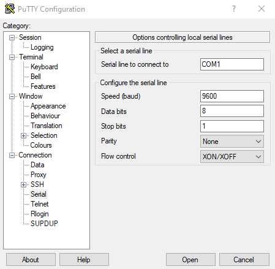
Ensuite Session > Open
Nous avons accédé à la console du switch
Administration VLAN en CLI
Création d’un VLAN
# Passage en mode system
system-view ou sys
# Création du VLAN 200
vlan 200
# Définition l’adresse IP/Sous-masque pour le VLAN 200
# Choix VLAN
interface vlan 200 ou int vlan 200
# Renseigner l’adresse IP ainsi que le sous-masque
ip address 172.28.1.253 255.255.0.0
# Ajout d’un port dans le VLAN, ici du 7 à 10
port Eth1/0/7
port Eth1/0/8
port Eth1/0/9
port Eth1/0/10
Afficher la configuration de VLAN’s
display vlan all
Une autre méthode pour afficher la configuration de ports en utilisant la commande display brief interface
Supprimer un VLAN
# Mode system
system-view ou sys
# Supprimer le VLAN 200
undo VLAN 200
Administration VLAN par interface Web
J’accède à l’interface web sur l’adresse 172.28.1.253/16
Menu > Device > VLAN > Setup
Création d’un VLAN
Modify VLAN
VLAN 200 avec ses ports actifs
Configurer d’une adresse IP en GUI
Administration > IP setup
VLAN1
Nous avons laissé en mode DHCP
VLAN 200
Créer un Trunk sur un port
Cela permet d’accéder deux vlan sur le même port
Switch 1
# Choix de l’interface
Interface GigabitEthernet1/0/28
# Changer le type de link
port link-type trunk
# Ajouter dans les VLAN souhaités
port trunk permit vlan 1 200
Configuration des ports actuel
Tagger un port
Pour interconnecter les deux switches, nous avons tagué les ports 28 sur chacun
interface GigabitEthernet1/0/28
port link-type hybrid
port hybrid vlan 1 200 tagged
Cisco Packet Tracer
Schéma du réseau
Configuration du Switch1 (T2SR)
Nous avons exécuté les commandes suivantes pour créer le VLAN 200
# Entrer dans mode Privileged EXEC
enable
# Entrer dans le mode configuration
config
# Choix terminal
terminal
# Configuration du VLAN
vlan 200
# Ajouter le port 0/7 dans le VLAN 200
interface FastEthernet0/7
# Mettre en mode accesible
switchport mode access
# Donner accès au port pour le VLAN 200
switchport access vlan 200
# Quitter la configuration
end
Nous avons effectué les mêmes commandes pour les ports 8 à 10, puis nous avons vérifié la configuration des ports avec la commande
sh run
Nous avons créé un trunk entre vlan 1 et 200 sur le port GigabitEthernet2
enable
config (choisir terminal)
interface GigabitEthernet0/2
switchport access vlan 200
switchport mode trunk
sh run
Nous pouvons obtenir les mêmes résultats en mode GUI
Menu Config
Configuration du Switch2 (T2SR2)
Nous avons exécuté les commandes suivantes pour créer le VLAN 200
# Entrer dans mode Privileged EXEC
enable
# Entrer dans le mode configuration
config
# Choix terminal
terminal
# Configuration du VLAN
vlan 200
Nous avons créé un trunk entre vlan 1 et 200 sur le port FastEthernet1 et 2
enable
config (choisir terminal)
interface FastEthernet0/1
switchport access vlan 200
switchport mode trunk
interface FastEthernet0/2
switchport access vlan 200
switchport mode trunk
sh run
Nous avons créé un trunk entre vlan 1 et 200 sur le port GigabitEthernet2
enable
config (choisir terminal)
interface GigabitEthernet0/2
switchport access vlan 200
switchport mode trunk
sh run
Conclusion
La configuration des switches est correctement déroulée. Nombreuses tâches sont plus aisées à faire en GUI, d’autres en CLI. La configuration en CLI est privilégiée.
TP Création Active Directory
Par Pierre, Zoltan**
TSSR-2201**
Création Active Directory
Objectif et environnement
Objectif
L’installation d’un Active Directory sur Windows Server 2019.
Environnement
Matériels :
Dell PowerEdge r240 avec Proxmox 7.1-7
Adressage des VM’s :
Réseaux : 172.28.0.0/16
Active Directory sur Windows serveur 2019 : 172.28.1.200/16
Processus
Fixer l’adresse IP
Avant d’installer Active Directory, j’ai fixé l’adresse IP du serveur somme suite
L’installation Active Directory
Dans la Gestion de serveur / Tableau de bord / Gérer / Ajouter des rôles et fonctionnalités

J’ai choisi installation basée sur un rôle
Choix du serveur
Choix rôle AD DS (Active Directory Domain Service)
J’ai validé l’ajout du rôle

J’ai laissé par défaut le choix des fonctionnalités
Début de l’installation
Promouvoir le serveur en contrôleur de domaine
Une fois installé, j’ai promu le serveur en contrôleur de domaine
Le nom du domaine racine est t2sr.io
J’ai décoché serveur DNS (n’est pas encore configuré) et renseigné le mot de passe DSRM.
Le nom de domaine NetBIOS renseigné automatiquement
J’ai laissé par défaut l’emplacement de la base de données AD DS
Après vérification, j’ai lancé l’installation
A la fin de l’installation le serveur redémarre.
Joindre un client linux dans Active Directory
Installation des package nécessaires sur des distributions basées sur Debian
apt install realmd sssd sssd-tools libnss-sss libpam-sss adcli samba-common-bin oddjob oddjob-mkhomedir packagekit -y
Installation des package nécessaires sur des distributions basées sur CentOS (FreePBX)
yum install realmd sssd sssd-tools libnss-sss libpam-sss adcli samba-common-bin samba-common-tools oddjob oddjob-mkhomedir packagekit -y
Vérifier que le domaine est joignable
realm discover t2sr.io
Joindre le serveur AD
realm join –user=Administrateur t2sr.io
Vérification sur l’AD l’ensemble des ordinateurs du domaine
J’ai séparé dans deux UO les serveurs et les clients.
Serveurs
Clients
Groupes et utilisateurs
Conclusion
L’installation s’est correctement déroulée. La mise en place de l’Active Directory doit être le premier serveur à configurer.
TP Installation et configuration
NAGIOS
Par Zoltan et Pierre**
TSSR-2201**
TP Installation et configuration NAGIOS
Objectif et environnement
Objectif
Installation NAGIOS sur un conteneur LXC de Proxmox.
Environnement
Matériels :
Dell PowerEdge r240 avec Proxmox 7.1-7
Adressage des VM’s :
Réseaux : 172.28.0.0/16
NAGIOS une VM Debian 11 : 172.28.1.207/16
Documentation
Processus
Installation
J’ai téléchargé Nagios sur le dépôt officielle, décompressé et lancé le script installation
cd /tmp
wget https://assets.nagios.com/downloads/nagiosxi/xi-latest.tar.gz
tar xzf xi-latest.tar.gz
cd nagiosxi
./fullinstall
Finalisation du l’installation
Je me suis connecté sur le site http://172.28.1.207/nagiosxi
J’ai accepté le contrat de licence
Une fois la configuration terminée, je peux entrer sur la page principale avec le compte précédemment crée.
La page d’accueil de NAGIOS
Visualisation des services sur le localhost (Détails > Statut d’accueil)
Intégrer Active Directory dans NAGIOS
Utilisateurs > ldap / ad intégration
J’ai ajouté un serveur d’authentification
Ajouter des utilisateurs
Utilisateurs > Gérer les utilisateurs
Choix ajouter des utilisateurs à partir de LDAP/AD
J’ai sélectionné et ajouté les utilisateurs
Dans le menu éditer, on peut renseigner les paramètres de sécurité pour les utilisateurs
Utilisateur simple :
Administrateur :
Préférences pour tous les utilisateurs
Une fois finalisé j’ai importé les utilisateurs
La liste des utilisateurs
Installation OpenSSH sur Windows Serveur 2019
Paramètres > Applications et fonctionnalités > Gérer les fonctionnalités facultatives
Si manquant, ajouter Client OpenSSH et Serveur OpenSSH
J’ai démarré le service avec une commande PowerShell et rendu démarrage automatique au lieu de manuel.
Start-Service -Name « sshd »
Set-Service -Name « sshd » -StartupType Automatic
J’ai vérifié à ce que ça soit bien démarré
Déployer l’agent Nagios sur Windows Server
Menu Configurer > Déployer l’agent
Ajouter un Windows serveur 2019 (ADDS) à surveiller
Configurer > Assistants de configuration > Active directory
J’ai renseigné l’adresse IP du serveur AD
J’ai renseigné les données nécessaires à la connexion de l’AD
Les paramètres suivants j’ai laissé par défaut
Configuration des paramètres de notification
Déployer l’agent Nagios sur Serveur Ubuntu (SAMBA)
Configurer > Déployer l’agent
J’ai choisi assistant de configuration
Limites d’utilisation du processeur à surveiller
Limites d’utilisation de la mémoire à surveiller
Choix des disques que je souhaite surveiller
Délais interrogation du client, puis terminer.
Conclusion
Il est aisé d’ajouter des nouveaux hôtes à surveiller avec l’assistant de configuration à condition d’avoir un lien SSH. Les services de surveillance de base proposés sont ; CPU, mémoire, stockage, trafics réseaux.
Installation et configuration pfSense
Par Zoltan**
TSSR-2201**
Installation et configuration pfSense
Objectif et environnement
Objectif
Installer et configurer pfSense CE 2.6.0
Environnement
Matériels :
Dell PowerEdge r240 avec Proxmox 7.2-7
Adressage des VM’s :
Réseaux : 172.28.0.0/16
pfSense: FW-PROXY 172.28.1.254
client Windows 10 : CLI-WIN-01, DHCP
client Linux Debian : CLI-DEB-01, DHCP
Documentation :
Processus
Installation
Nous avons téléchargé l’ISO d’installation sur le site officiel :
https://www.pfsense.org/download/
Nous avons booté sur l’ISO :
Choix de la langue
Configuration les adresse IP du pfSense
Choix 2
Choix 2
J’ai choisi entrée deux fois puis n pour le serveur dhcp.
Les adresses IP sont configurées
Configuration du pfSense
La VM pfSense est accessible sur l’adresse 172.28.1.254/16
Login par défaut : admin
Password par défaut : pfsense
Configuration générale
System / General Setup
Configurations accès au serveur
Système > Advanced > Admin Access
J’ai choisi l’accès via HTTPS
J’ai activé connexion via SSH
Test de la connexion SSH
La connexion fonctionne.
Configuration serveur DHCP
Services / DHCP Server / LAN
Vérification sur un client
La carte réseau est configuré dans le réseau 172.16.0.0/16 mais il a accès à l’internet. La passerelle par pfSense est fonctionnelle.
Connexion et authentification par Active Directory
System > User Manager > Authentification Servers > Add
Création d’un groupe adminpfsense sur l’AD avec deux utilisateurs
Sur la VM pfSense
System > User Manager > Groups > Add
Ajout la groupe adminpfsense que nous avons créé sur l’AD
Nous avons donné accès à ce groupe pour consulter toutes les pages
Test d’authentification
Diagnostics > Authentification
Je vais tester la connexion avec un utilisateur qui fait partie du groupe adminpfsense.
Maintenant, les utilisateurs appartenant au groupe adminpfsense peuvent administrer pfSense.
Mise en place serveur Proxy
Installation des packages Squid et Squidgard
System > Package Manager > Available Packages
Création d’un certificat de sécurité autosigné
System > Certificate Manager > Add
Activation Squid Proxy
Services > Squid Proxy Server
Configuration Local Cache
General
Spécifier les réseaux qui ont accès au proxy
ACLs
J’ai exporté le certificat et j’ai installé sur mes clients
Test avec un client Windows
Installer certificat
Double clic sur le certificat puis installer
Test avec le client Linux
J’ai créé un dossier pour accueillir notre certificat
mkdir /usr/local/share/ce-certificates/t2sr
cp t2sr_ssl_cert.crt /usr/local/share/ce-certificates/t2sr
J’ai installé le certificat
update-ca-certificates
Je test avec la page d’accueil Facebook
Avant l’application du blacklist
Apres l’application du blacklist
Configuration SquidGard
Une autre manière de créer de site blacklisté est d’utiliser SquidGard
Services > SquidGard Proxy Filter
Target Catégories
J’ai créé un target nommé test avec un nom domaine à refuser
Le résultat
Blacklist sous SquidGard
Nous pouvons uploader une blacklist archive. Il s’agit d’une collection des sites non désirables. J’ai utilisé celui créé par l’université de Toulouse :
http://dsi.ut-capitole.fr/blacklists/download/blacklists_for_pfsense.tar.gz
Une fois renseigné j’ai cliqué sur download
Common ACL
Nous retrouvons le target catégorie test que nous avons créé et également la liste importée que nous pouvons peaufiner par la suite.
Nous pouvons visualiser la liste de ses sites si besoin
Configuration du firewall
Firewall > Roules > LAN
J’ai désactivé l’accès en IPv6 (nous utilisons que des adresses en IPv4)
Créer Firewall Aliases
Firewall > Rules > LAN
L’état actuel du Firewall
Tous les ports sont ouverts pour une communication vers l’extérieur (LAN vers WAN).
Nous allons autoriser uniquement les ports suivants :
80 : http
443 : https
22 : ssh
53 : dns (tcp/udp)
123 : ntp
Ajout des ports TCP
Firewall > Aliases > Ports > Add
Ajout des ports UDP
J’ai choisi Apply changes
Firewall > Rules > LAN > Add
J’ai choisi comme destination la TCP_standard_Sortie précédemment crée.
J’ai ajouté un commentaire, puis j’ai sauvegardé
La règle a été crée
J’ai ajouté une deuxième règle pour DNS(UDP) et NTP
Création d’une troisième règle qui refusera tous les autres ports :
Firewall > Rules > LAN
J’ai ajouté un commentaire, puis cliqué sur Save.
Mise en Place Portail Captif
Services > Captive Portal > Add
Pour valider la configuration j’ai cliqué sur Save.
Adresse du portail captif : http://172.28.1.254:8002
Conclusion
La configuration du PfSense s’est bien déroulée. L’utilisation du portail captif nécessite d’avoir une carte réseaux supplémentaire afin de ne pas interférer avec les VM sur le réseau de production.
TP Veeam Backup
Par Zoltan**
TSSR-2201**
VEEAM Backup
Objectif et environnement
Objectif
Installation Veeam backup sur une VM Windows Serveur 2019
Environnement
Matériels :
Dell PowerEdge r240 avec Proxmox 7.1-7
Adressage des VM’s :
Réseaux : 172.16.0.0/16
Serveur Windows 2019 : VEEAM 172.28.1.204/16
Serveur AD – Windows serveur 2019 : 172.28.1.200/16
Client Linux Debian 11 : DHCP
Client Windows Win 10 Pro : DHCP
Helper Host (pour la restauration) Ubuntu serveur 22.04 : 172.28.1.202/16
Documentation
Processus
Installation
J’ai téléchargé l’image sur le site officielle :
Choix Veeam Backup & Replication
J’ai cliqué sur OK pour l’installer le paquet manquant
J’ai choisi Install pour installer les prérequis manquants
Connexion au serveur
J’ai lancé l’application
Choix Apply
Ajout d’un dossier de sauvegarde
Backup Infrastructure / Backup Repositories / Add Repository

J’ai cliqué sur Browse pour sélectionner la nouvelle partition de partage
Choix partition F:\ précédemment préparé (Partition REFS/64ko).
En cliquant sur Populate, nous pouvons voir la capacité du disque et l’espace libre restant.
A la fin de configuration j’ai cliqué sur Apply
Choix Oui
Sauvegarder des VM
Création d’un Backup Job
Sauvegarder le Serveur AD
Ajouter ordinateurs pour sauvegarder
Laissé par défaut
Possibilité de programmer l’exécution du Job
Une fois le Job est lancé, nous pouvons suivre son évolution
Sauvegarder d’une VM Linux
Créer un nouveau job > Linux Computer
Choix Server > Managed by backup server
J’ai ajouté la VM en question
N’ayant pas déclaré dans le DNS, j’ai utilisé son adresse IP. Credentials (droits) > Add > Linux Account
J’ai choisi sauvegarder la VM en entier
J’ai choisi de garder les deux derniers points de restauration
J’ai laissé ses options désélectionné (par défaut)
J’ai choisi une sauvegarde mensuelle
Le récapitulatif du job et lancement de la sauvegarde
Lancement du job, début de la sauvegarde
Le serveur va lancer un scan et automatiquement installer automatiquement un client VEEAM sur la VM Debian si manquant (ici c’est le cas)
Une fois l’agent est installé nous avons une réponse succès
J’ai installé les paquets nécessaires pour linux (Debian)
sudo apt install dkms gcc make perl openssh-server linux-headers-$(uname -r) libudev-dev libacl1 libattr1 lvm2 libfuse-dev libfuse2 libncurses5 dmidecode default-libmysqlclient-dev libpq5 python3 isolinux btrfs-progs squashfs-tools wget xorriso
Ensuite j’ai téléchargé et installé VEEAM
http://repository.veeam.com/.private/deb/veeam/
sudo dpkg -i veeam_5.0.2.4567_amd64.deb
Début de la sauvegarde

Fin de la sauvegarde
Sauvegarder d’une VM Windows
Création d’un nouveau job > Windows computer
Server > Managed by agent
Add > Individual computer
J’ai renseigné l’host et les droits d’accès
Nous avons la possibilité de renseigner directement l’utilisateur et son mot de passe ou passer par browse et chercher sur l’AD.
J’ai choisi browse
Puis avancé et renseigner l’accès à l’AD
Puis trouver l’utilisateur qu’on souhaite
Choix Volume level backup
Choix de objets avec Add > OS volume (je veux sauvegarder uniquement le volume contenant l’OS)
J’ai choisi Veeam backup repository (crée au début du TP)
Le nom DNS est automatiquement rempli
Choix de 2 points de restauration
Je ne choisis pas de créer une cache
J’ai laissé par défaut application-aware processing (traitement sensible aux applications)
J’ai choisi une sauvegarde par mois
Le récapitulatif
VEEAM lance son scan vers le client et installe l’agent si nécessaire
Début de la sauvegarde
Fin de la sauvegarde
Restaurer d’un fichier
Restaurer d’un fichier d’un VM Linux
Pour tester la restauration d’un fichier, j’ai créé un fichier test.odt puis j’ai effectué une sauvegarde. Par la suite j’ai supprimé le fichier pour pouvoir restaurer à partir de la sauvegarde.
Choix restore

Choix guest files restore
Choix de la machine virtuelle sur laquelle je veux restaurer le fichier supprimé.
Choix du point de restauration
Choix du linux serveur sur lequel on va « monter » notre VM debcli2
Linux server > Add
J’ai choisi comme helper host un Ubuntu serveur 22.04
Credentials > Add > Linux Account
Choix Oui
Les composants manquants seront automatiquement installés sur le Helper host
Récapitulatif
On peut renseigner une raison pour laquelle on effectue une restauration.
Choix Browse
La sauvegarde linux a été correctement monté, on peut rechercher le fichier supprimé
J’ai effectué un clic droit sur le fichier à restaurer :
Restauration en cours
Restauration effectuée

Je me suis reconnecté sur le client debcli01 pour vérifier si la restauration a bien été effectué.
Le fichier a été correctement restauré. Une fois la fenêtre fermée, le client est automatiquement démonté du serveur.
Restaurer d’un fichier d’un VM Windows
Je supprime un fichier du dossier téléchargement
Choix Restore
Choix Guest files restore
Choix Microsoft Windows
J’ai choisi la machine WINCLI01

Récapitulatif. J’ai cliqué sur Browse.
J’ai recherché le fichier manquant
J’ai choisi le fichier à restaurer
Le fichier a été correctement restauré
J’ai vérifié sur la VM si le fichier a bien été récupéré. Le fichier a été correctement restauré.
Conclusion
VEEAM est un outil complet proposant une multitude de possibilité de sauvegarde. Il est très performant même dans sa version Community Edition. La restauration d’une VM entier actuellement n’est compatible qu’avec VMWare et HYPER-V mais pas des VM Proxmox.
TP Serveur Exchange t2sr.io
Par Zoltan**
TSSR-2201**
Serveur Exchange
Objectif et environnement
Objectif
L’installation et configuration LDAP
Environnement
Matériels :
Dell PowerEdge r240 avec Proxmox 7.1-7
Adressage des VM’s :
Réseaux : 172.16.0.0/16
Serveur Samba et impression : SRVU22SMBIMP 172.30.1.202/16
Client Debian 1 : clideb1 172.16.2.1/16
Documentation
Processus
Configuration deuxième contrôleur de domaine
Fixer l’adresse IP

L’installation AD DNS
Gérer / Installation rôles
Entrer le serveur dans le domaine
Configuration contrôleur de domaine
Installation Microsoft Exchange
Prérequis
Installation Microsoft Visual C++ 2013
Installation des fonctionnalités sur Windows serveur
Exécuter la commande suivante en Powershell
Install-WindowsFeature Server-Media-Foundation, NET-Framework-45-Features, RPC-over-HTTP-proxy, RSAT-Clustering, RSAT-Clustering-CmdInterface, RSAT-Clustering-Mgmt, RSAT-Clustering-PowerShell, WAS-Process-Model, Web-Asp-Net45, Web-Basic-Auth, Web-Client-Auth, Web-Digest-Auth, Web-Dir-Browsing, Web-Dyn-Compression, Web-Http-Errors, Web-Http-Logging, Web-Http-Redirect, Web-Http-Tracing, Web-ISAPI-Ext, Web-ISAPI-Filter, Web-Lgcy-Mgmt-Console, Web-Metabase, Web-Mgmt-Console, Web-Mgmt-Service, Web-Net-Ext45, Web-Request-Monitor, Web-Server, Web-Stat-Compression, Web-Static-Content, Web-Windows-Auth, Web-WMI, Windows-Identity-Foundation, RSAT-ADDS
Installation Microsoft Exchange ISO
Exécution Setup an tant Administrateur
Installation complémentaire des prérequis nécessaires :
.Net Framework 4.8
Microsoft Unified Communications Managed API 4.0, Core Runtime 64-Bit
URL Rewrite (module de réécriture d’URL IIS)
Configuration du serveur
Configuration langue et l’heure
Créer une boite à lettre
Parcourir
Configurer Outlook
Ouvrir application Outlook
Choix exchange
J’ai installé les certificats
J’ai envoyé un message test entre deux compte Outlook
L’échange de mail fonctionne correctement.
Accès à Webmail
Je me suis rendu avec le client linux sur l’adresse https://srv-w19-exc/owa/
Un fois les accès renseignés, j’accède aux mails
Configuration la messagerie avec Thunderbird
Tout d’abords il faut démarrer et laisser en mode automatique le service IMAP4 sur le serveur exchange
Les paramètres de ma configuration
Puis configuration manuelle
Puis cliqué sur terminer
J’ai confirmé l’exception de sécurité
Thunderbird est ainsi configuré.
Conclusion
Le serveur de messagerie est fonctionnel, néanmoins Thunderbird ne récupère pas automatiquement le carnet d’adresse. Cela nécessiterait un abonnement 365 office.
Serveur d’impression t2sr.io
Par Pierre, Zoltan**
TSSR-2201**
Serveur d’impression
Objectif et environnement
Objectif
L’installation d’un serveur d’impression sur linux (SAMBA).
Environnement
Matériels :
Dell PowerEdge r240 avec Proxmox 7.1-7
Adressage des VM’s :
Réseaux : 172.28.0.0/16
Serveur SRV-UBU-SMB(SAMBA) : 172.28.1.202
Documentation
Processus
Pour l’installation nous avons utilisé le VM serveur de fichier ou SAMBA est déjà installé.
Configuration CUPS
apt install cups cups-client
Sauvegarder le fichier de configuration CUPS avant de le modifier :
cp /etc.cups/cupsd.conf /etc.cups/cupsd.conf.bkp
Le fichier cupsd.conf
Ajout du serveur d’impression dans SAMBA
nano /etc/samba.smb.conf
Redémarrer les services
systemctl restart cups smbd nmdb
L’administration du CUPS est accessible sur le port 631.
Ajouter une imprimante
*
J’ai choisi une pilote générique, puis continuer
Choix PCL laser printer, puis ajouter une imprimante

Pour tester, il suffit d’imprimer une page de test
Ajouter une imprimante aux clients
L’imprimante partagée est automatiquement reconnue sur le réseau :
Linux
Windows
Conclusion
CUPS est un outil léger pour ajouter une imprimante en réseaux, néanmoins l’ajout de pilotes propriétaires peut être fastidieux.
Serveur GLPI t2sr.io
Par Pierre et Zoltan**
TSSR-2201**
Serveur GLPI
Objectif et environnement
Objectif
L’installation d’un serveur GLPI sur un conteneur Debian 11.3.
Environnement
Matériels :
Dell PowerEdge r240 avec Proxmox 7.1-7
Adressage des VM’s :
Réseaux : 172.28.0.0/16
Serveur GLPI : 172.28.1.205
Documentation
Processus
Configuration du conteneur
Ressources
Network
DNS
Mise à jour et installation des paquets nécessaires
# Mise à jour
apt update && apt upgrade -y
# Installation Apache2 Php et Mariadb
apt install apache2 perl php mariadb-server -y
Autoriser le serveur apache et mariadb pour se lancer au démarrage du l’ordinateur
systemctl enable apache2 mariadb
Installation des paquets nécessaires pour glpi
apt install php-{ldap,imap,apcu,xmlrpc,cas,mysqli,mbstring,curl,simplexml,xml,intl,zip,bz2} -y
# Redémarrer le serveur apache
systemctl restart apache2
Téléchargement du paquet GLPI 9.5.6
wget github.com/glpi-project/glpi/releases/download/9.5.6/glpi-9.5.6.tgz
Décompression du fichier dans l’emplacement prévu
tar -xvf glpi-9.5.6.tgz -C /var/www/html/
J’ai ensuite changé le propriétaire du dossier téléchargé et ajouter des droits
chown -R www-data:www-data /var/www/html/glpi
chmod -R 775 /var/www/html/glpi
Création de la base de données
mysql
create database glpi ;
create user glpi@localhost identified by ‘Azerty123+’ ;
grant all privileges on glpi.* to glpi@localhost;
flush privileges ;
exit ;
Je suis allé sur la page internet http://172.28.1.212/glpi
Serveur SQL : localhost
Utilisateur SQL : glpi
Mot de passe SQL : glpi
Installation du version GLPI 10.0.2
wget github.com/glpi-project/glpi/releases/download/9.5.6/glpi-10.0.2.tgz
Les étapes restantes sont identiques à l’étape précédente.
Je suis allé sur la page internet http://127.0.0.1/glpi
Une extension est absente
J’ai installé extension
apt install php7.4-gd
systemctl restart apache2
J’ai réessayé la configuration
La configuration est correcte
C’est avertissement n’est pas bloquante
Connecter le serveur GLPI avec une Active Directory
Menu Configuration > Authentification
Annuaire LDAP, puis ajouter
Nous avons utilisé cette configuration :
OU administrateurs contient l’ensemble des utilisateurs qu’on souhaite importer. Un fois la configuration faite, nous pouvons la tester :
Importer les utilisateurs
Administration > Utilisateurs > Liaison annuaire LDAP
Puis importation de nouveaux utilisateurs > Rechercher
J’ai sélectionné les utilisateurs, puis importer.
Installation plugin fusioninventory sur GLPI 9.5.6
Pour pallier le problème du lien entre OCS inventory et GLPI, j’ai installé le plugin fusioninventory sur GLPI 9.5.6. Au moment de la rédaction du document, fusioninventory n’est pas compatible avec GLPI 10.0.2.
Installation du plugin
wget https://github.com/fusioninventory/fusioninventory-for-glpi/releases/download/glpi9.5%2B4.2
J’ai décompressé le fichier dans /var/www/html/plugins
Puis installé avec la commande suivante :
php bin/console glpi:plugin:install –username=glpi fusioninventory
php bin/console glpi:plugin:activate fusioninventory
Accueil > Configuration > Plugins
Accueil > Administration > Entités > Entité racine > Fusioninventory
Installation fusioninventory agent sur linux
apt install -y fusioninventory-agent
J’ai modifié le fichier /etc/fusioninventory/agent.cfg
systemctl restart fusioninventory-agent.service
Forcer la synchronisation du l’agent
Pour vérifier que le plugin fonctionne correctement, on peut se rendre sur sa page d’accueil dans un navigateur.
Pour forcer la synchronistation je suis allé sur le site
Ce message d’erreur apparut
J’ai modifié le fichier /etc/fusioninventory/agent.cfg
systemctl restart fusioninventory-agent.service
Installation fusioninventory agent sur Windows
J’ai téléchargé l’installateur sur le site de GitHub
https://github.com/fusioninventory/fusioninventory-agent/releases/tag/2.6
Conclusion
L’installation du serveur GLPI est correctement déroulée sur un conteneur Debian 11.3 ainsi que l’intégration du l’agent fusion inventory.
Serveur partage de fichier SAMBA
Par Pierre, Zoltan**
TSSR-2201**
Serveur partage de fichier SAMBA
Objectif et environnement
Objectif
L’installation et configuration LDAP
Environnement
Matériels :
Dell PowerEdge r240 avec Proxmox 7.1-7
Adressage des VM’s :
Réseaux : 172.16.0.0/16
Serveur Samba et impression : SRV-UBU-SMB 172.28.1.202/16
Client Debian 1 : clideb1 172.28.2.1/16
Documentation :
Processus
Installation
J’ai créé une sauvegarde en faisant :
sudo cp /etc/netplan/00-installer-config.yaml /etc/netplan//00-installer-config.yaml.bkp
Dans le fichier /etc/netplan/00-installer-config.yaml
$ sudo netplan apply
Installation des logiciels d’authentification sur le domaine
sudo apt install acl realmd libnss-winbind winbind
Créer l’espace de stockage des partages
Création nouvelle partition
Créer le groupe de volumes LVM
vgcreate samba /dev/sdb1
Joindre la machine virtuelle au domaine
Installer Kerberos
sudo apt install krb5-user
On a édité le fichier /etc/krb5.conf
Installation SAMBA
sudo apt update && sudo apt upgrade -y
sudo apt install -y samba
Modifier le fichier /etc/samba/smb.conf
sudo apt install -y ntp
On a modifié le fichier /etc/ntp.conf comme suite :
Redémarrer ntp et smbd
service ntp restart
service smbd restart
Nous avons rentré notre serveur samba dans le domaine
service winbind restart
Configurer NSS
Nous avons modifié le fichier /etc/nsswitch.conf
Pour vérifier si tout est fonctionnel jusqu’au présent
Préparation PAM
pam-auth-update

Nous avons sélectionné Non.
Nous avons modifié le fichier /etc/pam.d/common-auth
Nous avons modifié le fichier /etc/pam.d/common-password
Nous avons modifié le fichier /etc/pam.d/common-session
Configuration du fuseau horaire (choix France/Paris)
sudo dpkg-reconfigure tzdata
sudo reboot
Vérification espace de partage disponible
sudo vgdisplay > vgdisplay.txt
vim vgdisplay.txt
Création du partage
Création du volume logique
Formatage de la partition
Montage du volume logique
Récupération ID du disque
Nous avons ajouté le fichier /etc/fstab pour un montage automatique
Montage de toutes les partitions et vérifier le montage
Retirer l’espace réservé pour root (inutile)
Définition des droits d’accès avec les ACL
Création d’un groupe sur l’Active Directory
En prévision des définitions ACL j’ai créé un groupe nommé partage sur l’AD
Puis j’ai ajouté deux membres
Définition ACL sur la racine du partage
Attention ! T2SR\partage – partage correspond au nom groupe précédemment créé
Définition ACL par défaut du partage
Modification du Samba
Redémarrage le service Samba
sudo systemctl restart smbd
Test partage avec un client Debian
+ Autre emplacements
Nous avons renseigné le dossier partage
Si le fichier /etc/hosts est bien renseigné, on peut se connecter par le nom aussi
Conclusion
La mise en place d’un serveur de partage est complexe si on souhaite synchroniser les accès et droits avec un Active Directory.
Serveur Zabbix
par Pierre, Zoltan**
TSSR-2201**
Serveur Zabbix
Objectif et environnement
Objectif
L’installation et configuration d’un serveur Zabbix
Environnement
Matériels :
Dell PowerEdge r240 avec Proxmox 7.1-7
Adressage des VM’s:
Réseaux : 172.16.0.0/16
Serveur FreepBX : SRV-UBU-ZBX 172.28.1.210/16
Documentation :
Processus
Installation de Zabbix
Nous avons créé une VM avec l’ISO de Zabbix 6.0 LTS puis lancé l’installation
L’installation se déroule automatiquement
Une fois l’installation est terminée, nous pouvons accéder à Zabbix via le navigateur web :
Utilisateur par défaut : Admin
Mot de passe par défaut : zabbix
Ajouter un Host
Dans la barre latérale Configuration > Hôtes
Créer un hôte
L’installation de l’agent Zabbix sous Linux
J’ai téléchargé la package zabbix correspondant à la VM depuis le site officiel :
Installation du package et démarrage du service
Modification du fichier de configuration :
nano /etc/zabbix/zabbix_agentd.conf
Server doit correspond à l’adresse ip du serveur zabbix.
Puis j’ai redémarré le service
systemctl restart zabbix-agent
Le serveur GLPI a correctement monté :
J’ai effectué les mêmes manipulations pour tous les serveurs de type linux.
L’installation de l’agent Zabbix sous Windows
J’ai téléchargé l’agent sur le site officiel correspondant à Windows:
Menu Configuration > Hôte > Ajouter
Environ 60s plus tard le serveur ajouté devient disponible
Le tableau de bord
Les serveurs surveillés
Conclusion
La configuration du serveur Zabbix avec le déploiement des agents est terminée.
**
**
TrueNAS
par Pierre, Zoltan**
TSSR-2201**
TrueNAS
Objectif et environnement
Objectif
L’installation et configuration d’un serveur TrueNAS
Environnement
Matériels :
Dell PowerEdge r240 avec Proxmox 7.1-7
Adressage des VM’s:
Réseaux : 172.16.0.0/16
Serveur SRV-NAS : SRV-PBX-VOIP 172.28.1.209/16
Documentation :
Processus
Installation de trueNAS
Je choisis la première option
Je choisis la première option
Je sélectionne le disque sur lequel l’os va s’installé
Je choisie « yes »
Je met un mot de passe au compte root
Je choisie de boot en BIOS, puis j’attends la fin de l’installation
Je redémarre le serveur NAS
Je configure l’adresse IP du NAS en sélectionnant l’option 1, puis je suis les instructions.
J’ai aussi configuré les routes statiques et l’adresse de DNS.
Je tape l’adresse IP du serveur NAS pour accéder à sa page web de gestion et je me connecte avec l’utilisateur root. Ci-dessous l’interface web. |
|---|
Création d’un volume de stockage + dataset
Dans le menu à gauche dans Stockage > Volumes.
Je créer un nouveau volume.
Je nome le nouveau volume et je sélectionne les disques disponibles qui y seront rattaché.
Pour le TP nous avons ajouté un troisième disque a notre serveur qui est externe en USB.
Je sélectionne un seconde fois le disque et je force la création du VDevs du volume.
| | | |———————————————|———————————————|
A deux reprises j’ai un message me demandant si je suis sûr d’effectuer la manipulation, chose que je confirme.
Le volume est en cours de création, cela peut prendre plusieurs minutes.
Une fois le volume créer, je créer mes dataset.
J’ai créé deux dataset, ISO et BACKUP avec la même configuration.
! Il faut changer le type de partage en SMB !
Mes deux dataset son créer.
Mise en place du partage Windows (SMB)
| Dans le menu à gauche, Partage > SMB. |
|---|
Je créer un partage pour chaque dataset que j’ai créé dans le volume t2sr_storage.


Mes deux partages sont créés et activé.
NAS et AD
| Dans le menu à gauche, Services d’annuaire > Active Directory. |
|---|
Je renseigne les informations pour joindre le domaine.
| | Cela permet au NAS de connaitre les utilisateurs de l’AD et leur permet de se connecter à lui sans devoir passer par un compte local propre au NAS. | |———————————————|—————————————————————————————————————————————————–|
TEST + Conclusion
Je me connecte au partage :
| | | |———————————————|———————————————| | | | | | |
Connection au partage réussi.
Serveur LAMP
Linux – Apache – MariaDB - PHP
par Pierre, Zoltan**
TSSR-2201**
Serveur LAMP
Objectif et environnement
Objectif
L’installation et configuration d’un serveur LAMP.
Environnement
Matériels :
Dell PowerEdge r240 avec Proxmox 7.1-7
Adressage des VM’s:
Réseaux : 172.16.0.0/16
Serveur CT-DEB-WEB : 172.28.1.208/16
Documentation :
Un serveur LAMP c’est quoi ?
Fonctionnement de l’arborescence d’apache
Il y a deux arborescences à prendre en compte :
|
|
|---|---|
Illustration des éléments prendre en compte dans /etc/apache2
Il y a dans apache une notion de fichier « disponible » et « actif », les fichiers conf dit disponible doivent être activé pour être consultable sur le navigateur internet (sans avoir a tapé l’URL).
Par exemple dans le cas du fichier 000-default.conf qui est disponible et activé, tout changement édité sur le fichier dans un des deux dossiers sera effectué sur son homologue.
Processus
Installation d’Apache 2
J’installe apache avec un module qui permet de gérer PHP.
apt install apache2 libapache2-mod-php
Je vérifier le bon fonctionnement du serveur web qui normalement renvoie la page d’accueil de apache2 (version Debian).
Je configure le service apache2 pour qu’il démarre automatiquement au démarrage du centenaire.
systemctl enable apache2
J’active des modules apaches :
a2enmod rewrite
a2enmod deflate
a2enmod headers
Puis je recharge la configuration avec la commande suivante :
systemctl reload apache2
Cette commande permet de recharger la configuration d’apache sans pour autant avoir besoin de relancer entièrement le service.
Pour voir la liste des modules activé je vais dans /etc/apache2/modes enabled
Comme on peut le voir avant et après l’activation de certains modules, le contenu du dossier a changé.
Installation de Php
J’installe les packages de Php ainsi que les modules php les plus courants :
apt install php php-cli
apt install php-{curl,gd,intl,memcache,xml,zip,mbstring,json}
Pour interagir avec SQL :
apt install php-mysql
Pour tester le bon fonctionnement de Php je crée un fichier test.php
echo « <?php phpinfo(); ?> » > /var/www/html/test.php
Dans la barre de recherche d’un navigateur je tape l’adresse de mon serveur web suivant de test.php, soit :
http://172.28.1.206/test.php
Il s’agit de la page récapitulant la configuration de php (version 7.4.30).
Je peux éditer les options de PHP via le fichier /etc/php/7.4/apache2/php.ini ou créer un fichier personnalisé dans /etc/php/7.4/apache2/conf.d.
Mais je n’ai pas l’utilité de changer les options, je laisse donc php en configuration par défaut.
Installation de MariaDB (optionnel)
Je choisis d’installer et utiliser MariaDB pour la base de données du serveur LAMP.
MariaDB étant le fork1 de mySQL, le fonctionnement de MariaDB fonctionnement est similaire a mySQL.
1 Un fork (terme anglais signifiant « fourche », « bifurcation », « embranchement ») désigne dans le jargon informatique, un nouveau logiciel créé à partir du code source d”un logiciel existant.
J’installe le package :
apt install mariadb-server
Je démarre l’installation :
mysql_secure_installation
Change the root password? [Y/n] Y
New password: Azerty123+
Re-enter new password: Azerty123+
Password updated successfully!
Remove anonymous users? [Y/n] Y
Disallow root login remotely? [Y/n] Y
Remove test database and access to it? [Y/n] Y
Reload privilege tables now? [Y/n] Y
Pour entrer dans la base de données :
Création d’un utilisateur admin.
J’active mariaDB au démarrage :
Rendre disponible une page web
Je dois créer un fichier conf contenant le virtualhosts du site chuck-norris à mettre en place.
Exemple avec le fichier 000-default.conf :
nano /etc/apache2/sites-available/chuck-norris.conf
Fichier chuck-norris.conf créer :
En suite avec la commande suivante j’active le site :
a2ensite chuck-norris
a2dissite pour le désactivé
Puis je recharge apache 2 :
systemctl reload apache2
Vérification de l’activation du site
Apache par défaut cherche automatiquement un fichier index.html à afficher.
Ceci est propre à la configuration du réseau de production sur lequel je suis, cependant il faut bien renseigner le DNS pour rendre accessible le site sans avoir a tapé l’adresse IP.
Le CNAME est www car il est renseigné ainsi dans le virtualhost du fichier chuck-norris.conf :
Je n’aborderai pas dans cette documentation la possibilité du faire du multisites sur ce service web.
Je renseigne l’adresse du site et vérifie sa disponibilité.
La page est bien chargée et affichée, il ne s’agit que d’une page html basique afin de vérifier le bon fonctionnement du service web délivré par serveur LAMP sous conteneur.
Conclusion
Le serveur LAMP est installé, configuré et
FreePBX
par Pierre, Zoltan**
TSSR-2201**
FreePBX
Objectif et environnement
Objectif
L’installation et configuration d’un serveur FreepBX
Environnement
Matériels :
Dell PowerEdge r240 avec Proxmox 7.1-7
Routeur WIFI TP-LINK TL-WA801ND
2 x tablettes sous LENOVO tab 7 essential sous android
Adressage des VM’s:
Réseaux : 172.16.0.0/16
Serveur FreepBX : SRV-PBX-VOIP 172.28.1.208/16
Documentation
Processus
Installation VM FreePBX
Je choisis l’installation recommandé

Je choisis le “graphic install – output to VGA” puis “FreePBX standard”
Pendant l’installation je configure le mdp root : “azerty123+”
Je redémarré à la fin de l’installation
Je me connecte
J’ai ensuite modifié la langue du clavier en AZERTY :
system-config-keyboard
Puis j’ai fixé l’adresse IP de la façon suivante :
nano /etc/sysconfig/network-scripts/ifcfg-eth0
Redémarrage du service réseau
systemctl restart network
Config FreePBX
J’accède à la page de configuration sur l’adresse http://172.28.1.208
Initial Setup
FreePBX Administration
Choix du langage (laissé en anglais)
Pour la configuration pare-feu j”ai laissé les paramètres par défaut.
Le pare feu passe en vert
Interagir avec le firewall en ligne de commande
Arrêter
fwconsole firewall stop
Démarrer
fwconsole firewall start
Ajouter une zone de confiance
fwconsole firewall trust 172.28.0.0/16
Retirer une adresse de confiance
fwconsole firewall untrust 172.28.2.3/32
Lister les adresses de confiance
fwconsole firewall list trusted
Ajouter des utilisateurs par extension (non liée à l’Active Directory)
Menu Application > Extension > Add Extention
Add new SIP
J’ai ajout user extension 1001 puis cliqué sur Submit. (Répéter la manipulation par utilisateur)
Les deux utilisateurs peuvent désormais communiquer
Relier FreePBX avec l’Active Directory
Menu > User Manager > Directory > Add
Dans l’exemple, les numéros d’appels sont automatiquement récupérés depuis l’AD.
Les postes sont automatiquement créés
Mettre l’Active Directory par défaut
Menu User Manager choix par défaut
Editer les comptes utilisateurs
Menu Applications > Extentions > Choix Utilisteur
On peut attribuer un mot de passe par défaut ou changer la langue dans le menu général.
Voicemail
Accéder sur le téléphone par le bouton enveloppe ou sur une application en composant *97.
Pour appeler depuis un autre téléphone, appeler *98 et suivez les instructions.
Mot de passe pour le répondeur : 1234
NB : Il faut configurer le répondeur du premier appel.
Conclusion
L’installation et la configuration basique du serveur FreePBX s’est bien déroulée.
OCS Inventory
par Pierre, Zoltan**
TSSR-2201**
Serveur OCS
Objectif et environnement
Objectif
L’installation et configuration d’un serveur OCS Inventory dur un containeur Debian 11.
Environnement
Matériels :
Dell PowerEdge r240 avec Proxmox 7.1-7
Adressage des VM’s:
Réseaux : 172.16.0.0/16
Serveur OCS : CT-DEB-GLPI 172.28.1.205/16 (colocalisé avec GLPI)
Documentation
Processus
Installation et configuration des prérequis
Installation Apache2
apt update
apt install apache2 -y
systemctl enable apache2
Création la configuration fqdn
nano /etc/apache2/conf-available/fqdn.conf
# remplissez hostname
ServerName CT-DEB-GLPI
a2enconf fqdn
systemctl reload apache2
Installation Php
apt install php -y
Créer index.php
nano /var/www/html/index.php
# le contenu du fichier
< ?php
Phpinfo() ;
?>
Vérifiez dans le navigateur
Supprimer les fichiers inutiles
rm /var/www/html/index.php
systemctl restart apache2
Installation Mariadb
apt install mariadb-server mariadb-client -y
systemctl enable mariadb.service
Création de la base de données
mariadb -u root
Installation OCS Inventory
apt install apache2-dev libmariadb-dev-compat php-soap cpanminus libnet-ssleay-perl libio-socket-ssl-perl -y
cpan install YAML # répondre yes
cpan install –f CPAN # répondre yes
cpan install XML::Simple Compress::Zlib DBI DBD::mysql Apache::DBI Net::IP Archive::Zip XML::Entities
apt install libxml-simple-perl libperl5.32 libdbi-perl libdbd-mysql-perl libapache-dbi-perl libnet-ip-perl libsoap-lite-perl libarchive-zip-perl make build-essential php-pclzip php-mbstring php-mysql php-curl php-xml php-zip php-gd -y
cpan install Apache2::SOAP
cpan install Mojolicious::Lite Switch Plack::Handler
Installation du serveur
J’ai téléchargé ocsinventory sur ce site : download.ocsinventory-ng.org/nightly
cd /tmp
wget
http://download.ocsinventory-ng.org/nightly/OCSNG_UNIX_SERVER_2.10.0-nightly-2022-08-19.tar.gz
tar xzf OCSNG_UNIX_SERVER_2.10.0-nightly-2022-08-19.tar.gz
cd OCSNG_UNIX_SERVER
systemctl restart apache2
sh setup.sh ## Tapez entrée à chaque question
Configuration du serveur OCS
nano /etc/apache2/conf-available/z-ocsinventory-server.conf
J’ai modifié ses deux lignes pour faire correspond avec la configuration de notre base de données
nano /etc/apache2/conf-available/zz-ocsinventory-restapi.conf
chown root:www-data /var/lib/ocsinventory-reports
chmod 775 /var/lib/ocsinventory-reports
Activation de la configuration de OCS
a2enconf z-ocsinventory-server
a2enconf ocsinventory-reports
a2enconf zz-ocsinventory-restapi
systemctl restart apache2
On accède aux restes des configurations via le navigateur
http://172.28.1.205/ocsreports
OCS va peupler la base de données
J’ai cliqué sur « Click here to enter OCS-NG GUI »
J’ai cliqué sur « perform the update »
Choix de langue en français login: admin, mdp. : admin
Paramétrer OCS
J’ai supprimé le fichier indiqué et crée un nouvel utilisateur avec un différente mot de passe.
Menu Configuration > Utilisateurs > Créer un utilisateur
J’ai supprimé le compte créé par défaut
J’ai supprimé également le fichier install.php
Une fois la page rafraîchi, l’ALERTE SECURITE disparait.
Menu Configuration > General Configuration > Serveur
J’ai activé TRACE_DELETED (à cause de l’interconnexion avec GLPI)
Configuration OCS avec GLPI 10.0.2
J’ai créé un compte gratuit sur https://services.glpi-network.com/
Ensuite j’ai copié la clé d’enregistrement
J’ai copié la clé dans
Menu Configuration > Générale > GLPI Network
J’ai accédé GLPI marketplace et téléchargé le plugin OCS Inventory NG
Configuration > Plugins
J’ai cliqué sur configurer
Serveurs OCSNG
Ajout serveur OCS
Tester
Menu Outils > OCS Inventory NG
Cliqué sur
OCS est désormais lié, nous pouvons importer un inventaire.
Configuration SSL
Création un dossier pour stocker le certificat
mkdir /etc/apache2/ssl
# installation openssl si ce n’est pas déjà le cas
apt install openssl
Génération d’une clé RSA
openssl genrsa 2048 > /etc/apache2/ssl/gestparc.key
Création du certificat
openssl req -new -key /etc/apache2/ssl/gestparc.key -x509 -days 365 -out /etc/apache2/ssl/gestparc.crt
A la question Common Name, j’ai mis : CT-DEB-GLPI
Ensuite j’ai édité le fichier /etc/apache2/sites-available/default-ssl.conf
J’ai activé SSL
a2enmod ssl
a2ensuite default-ssl
systemctl restart apache2
J’accède à la page GLPI en https
Installation OCS Inventory agent sur Windows
J’ai téléchargé l’agent sur le site officiel :
https://github.com/OCSInventory-NG/WindowsAgent/releases/tag/2.9.2.0
J’ai installé l’agent
J’ai lancé l’installateur
J’ai lancé l’installation
Ensuite j’ai copié le fichier gestparc.crt dans c:\ProgramData\OCS Inventory NG\Agent.
Puis j’ai renommé en cacert.pem.
J’ai arrêté puis redémarré le service OCS Inventory
Notre client apparait dans OCS inventory
Installation OCS Inventory agent sur Linux
apt update
apt install libmodule-install-perl dmidecode libxml-simple-perl libcompress-zlib-perl libnet-ip-perl libwww-perl libdigest-md5-perl libdata-uuid-perl
apt install ocsinventory-agent
Choix http
J’ai rentré l’adresse de mon serveur OCS : https://glpi-ocs.t2sr.io/ocsinventory
J’ai mis à jour le serveur (mis à jour manuel)
ocsinventory-agent –server https://glpi-ocs.t2sr.io/ocsinventory
J’ai modifié de manière que l’agent soit mis à jour par heure :
mv /etc/cron.daily/ocsinventory-agent /etc/cron.hourly
Le client Debian est bien arrivé sur OCS
Importer l’inventaire dans GLPI 10.0.2
Menu Outils > OCS Inventroy NG > Import de l’inventaire > Importer et lier des ordinateurs
L’importation des ordinateurs ne s’est pas déroulée correctement. J’ai créé une issue sur la page GitHub du développeur.
https://github.com/pluginsGLPI/ocsinventoryng/issues/329
**
**
Site Web de documentation
par Pierre, Zoltan**
TSSR-2201**
**
**
Site Web de documentation
Objectif et environnement
Objectif
L’installation et configuration d’un site web documentaire.
Environnement
Matériels :
Dell PowerEdge r240 avec Proxmox 7.1-7
Adressage des VM’s:
Réseaux : 172.16.0.0/16
Serveur OCS : CT-DEB-WEB 172.28.1.206/16
Documentation
Processus
Pandoc
Je télécharge l’exécutable d’installation de Pandoc sur le site : https://pandoc.org/installing.html.
Puis je l’exécute.
Installation
J’accepte les thermes de la licence et j’installe Pandoc pour tous les utilisateurs
J’attend la fin de l’installation.
Pandoc est bien installé sur mon système d’exploitation, pour l’utiliser il me suffit dans un cmd ou PowerShell de faire appel a lui parle biais de la commande pandoc.
Conversion d’un docx en Markdown avec les images
Je place le fichier docx : Cluster t2sr.io par Pierre et Zoltan ; dans un dossier sur lequel je vais travailler (dossier pandoc).
Dans un cmd je me place dans mon dossier ou ce trouve mon fichier docx. Puis j’exécute la commande suivante :
pandoc -o « Cluster t2sr.io par Pierre et Zoltan.md » –extract-media=./ « Cluster t2sr.io par Pierre et Zoltan.md »
Pandoc va créer un dossier media avec toutes les images qui sont dans le docx ainsi qu’un fichier markdown où il modifie pour chaque image le chemin d’accès afin qu’elle soit affichée dans le fichier markdown lorsqu’il est compiler.
Dans Visual Studio Code grâce a l’extension Markdown, je peux afficher des fichiers de cette extension et les compiler pour visualiser le rendu.
Voici le rendu du fichier markdown qui est beaucoup plus simple en mise en page.
Secure Copy Protocol
Mon réseau de production étant 172.28.0.0/16, j’ai donné temporairement accès au réseau 192.168.0.0/26 avec un deuxième carte réseau à mon container WEB.
Depuis l’invite de commande de ma machine dans le réseau 192.168.0.0/26, sur lequel est hébergé mes fichiers de documentations.
J’utilise la commande suivante :
scp -r « doc t2sr.io » root@192.168.10.66:/root
Sur mon container :
Sphinx Python Documentation Generator
Installation de pip
Sur le serveur LAMP du container WEB qui a python3 j’ai installé le module pip (package installer for python).
sudo apt install python3-pip
Je vérifie la version de pip :
Documentation de sphinx
https://www.sphinx-doc.org/en/master/usage/installation.html
https://www.sphinx-doc.org/en/master/tutorial/getting-started.html
Génération d’un projet avec sphinx
Pour générer un site de documentation en HTML, j’utilise Sphinx.
J’installe son package sur le container WEB
apt-get install python3-sphinx
je vérifie la version de sphinx :
Puis je créer l’arborescence d’un nouveau projet dans /var/www/ :
sphinx-quickstart docs
Une fois créer je vais générer une page html par défaut :
sphinx-build -b html ./docs/source/ ./docs/build/html
Le dossier html a bien été généré avec son arborescence.
Je vérifie la page html généré dans un navigateur d’une VM de mon réseau de production.
Pour ce faire je renseigne l’adresse suivante pour mon cas :
Modifier le thème
J’installe les packages du thème « Reads the Docs Sample » :
pip install sphinx-rtd-theme
Dans /var/www/docs/source je modifie la ligne « html_theme = ‘alabaster’ » dans le fichier conf.py
Je replace la valeur ‘alabaster’ par : ‘sphinx_rtd_theme’.
Après avoir modifier le fichier dans la racine de docs (/var/www/docs) je fais cette commande pour générer un nouveau fichier html :
make html
Je recharge la page html de mon navigateur internet :
Le thème est appliqué correctement.
Ajout du contenu au site de documentation (fichier markdown)
J’installe recommonmark
pip install –upgrade recommonmark
Les deux sont des parser pour markdown
J’édite le fichier conf.py dans /var/www/docs/source
Je place dans le dossier source les fichiers markdown
Puis j’édite le fichier index.rst situé a la racine de source
J’ai écrit les noms de mes fichier markdown dans le « .. toctree :: »
A la racine du dossier docs je fais la commande suivant pour généré de nouveau le site en html
make html
Puis je vérifie le site de documentation sur le navigateur :
Conclusion
Le site de documentation est fonctionnel, cependant il faut faire attention à ce que les fichiers en markdown s’il y a de l’indexation avec des titres soit bien indexé et organisé.
PingCastle
par Pierre, Zoltan**
TSSR-2201**
PingCastle
Objectif et environnement
Objectif
L’installation PingCastle pour auditer le serveur Active Directory.
Environnement
Matériels :
Dell PowerEdge r240 avec Proxmox 7.1-7
Adressage des VM’s:
Réseaux : 172.16.0.0/16
Le logiciel PingCastle est installé directement sur la VM du l’Active Directory
Documentation
Processus
Téléchargement
Lien de téléchargement :
https://www.pingcastle.com/download/
J’ai téléchargé l’archive et je l’ai extrait.
Réalisation d’un audit AD
J’exécute l’application PingCastle.exe
Je me place sur le premier choix et j’appuie sur la touche Entrer
PingCastle a reconnue le domaine t2sr.io, j’appuie donc de nouveau sur Entrer car il s’agit du choix par défaut.
L’audit prend quelques secondes à s’effectuer, une fois fini j’appuie sur Entrer et PingCastle se ferme.
Deux fichiers ont été généré à la racine du dossier de PingCastle.
Lecture du rapport de l’audit AD
J’ouvre dans un navigateur le fichier ad_hc_t2sr.io.html
L’indicateur est élevé ce qui veux dire que l’AD n’est sécurisé comme il le devrait, cette note est normale étant donné que l’AD est proche d’une configuration par défaut, peut de sécurisation ont été fait dessus.
Attention !
Ce compteur correspond à la note la plus élevé sur 4 catégories, dans
notre cas il fait référence au compteur d’anomalies.
Grace au 4 compteur je peux situer les points de sécurité et les modifications à effectuer pour renforcer la sécurité générale de l’AD.
Stale Object : points de sécurité liés aux utilisateurs ou aux ordinateurs
Privileged Accounts : points de sécurité liés aux comptes avec des privilèges élevés (Administrateurs) du domaine Active Directory
Trusts : points de sécurité liés aux relations d”approbations entre les domaines Active Directory
Anomalies : points de sécurité liés à d”autres aspects de la configuration qui peuvent impacter la sécurité de votre annuaire
Juste en dessous des compteurs vient le tableau « Risk Model », il permet de cerner les configurations auquel il faut porter attention.
Ce qui est en blanc n’est pas dans la légende, cela veut dire :
Pas de problèmes tout est bon !
Ensuite vient les règles spécifiques catégories par catégories a modifié et à prendre en compte.
A savoir :
Lorsque l’on exécute un audit AD avec PingCastle l’audit précédent est écrasé !
Il faut penser à sauvegarder les anciens audits.
Planifier un audit régulier de l’AD avec PingCastle
J’ai créé un script PowerShell qui placé à la racine du Dossier de PingCastle permet de :
Créer un dossier « auditBkp » s’il n’existe pas
Exécuter un audit AD par le biais du PingCastle.exe
Transférer les deux fichier html et xml dans le dossier auditBkp et de les renommés en y ajoutant la date et l’heure lors de l’exécution de l’audit AD.
Le script :
$BkpPath = « .\auditBkp »
If(!(Test-Path $BkpPath)){
New-Item -ItemType Directory -Force -Path $BkpPath
}
.\PingCastle.exe –server SRV-W19-AD.t2sr.io –healthcheck
$SourceFileHtmlPath = « .\ad_hc_t2sr.io.html »
$SourceFileXmlPath = « .\ad_hc_t2sr.io.xml »
$DateNow = Get-Date -Format « ddMMyyyyHHmm »
$FileHtml = « ad_hc_t2sr.io_ »+$DateNow+ ».html »
$FileXml = « ad_hc_t2sr.io_ »+$DateNow+ ».xml »
Move-Item -Path $SourceFileHtmlPath
-Destination.\auditBkp\$FileHtml
Move-Item -Path $SourceFileXmlPath -Destination .\auditBkp\$FileXml
Ce script est propre au réseau sur lequel je travaille (il s’agit d’un script PowerShell : .ps1).
Pour m’aider j’ai consulté le « help » de PingCastle dans une invite de commande :
.\PingCastle.exe –help
Conclusion
PingCastle est un outil très intéressant pour auditer l’Active Directory avant de sa mise en production.